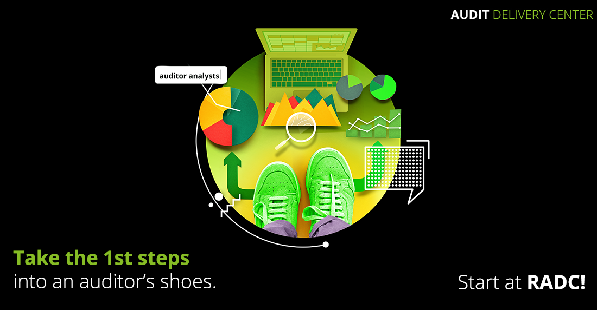

<!DOCTYPE html>
<html lang="en">
  <head>
    <meta charset="UTF-8" />
    <meta http-equiv="X-UA-Compatible" content="IE=edge" />
    <meta name="viewport" content="width=device-width, initial-scale=1.0" />
    <title>RADC Recruitment 2021</title>
    <link rel="stylesheet" href="css/style.css" />
    <!-- jQuery JS 3.1.0 -->
    <script src="https://ajax.googleapis.com/ajax/libs/jquery/3.1.0/jquery.min.js"></script>
    <script src="script.js"></script>
  </head>
  <body>
    <div class="radc-2021-wrapper">
      <div class="wrap-container">
        <!-- HEADER IMAGE -->
        
        <!-- INTRO SECTION -->
        <div class="intro-section">
          
          <div class="intro-section-wrapper">
            <div class="intro-section-job">
              <h1 class="job-text"><span class="green nowrap">Junior Audit Analyst</span> <span class="nowrap">Career Opportunities</span> in our <span class="bold nowrap">Regional Audit Delivery Center</span> <span class="bold">(RADC | Deloitte)</span></h1>
              <a href="#" target="_blank" class="discover-jobs bold">Discover job opportunities</a>
            </div>
            <div class="intro-section-anchor">
              <span class="why-join bold">
                Why <br />
                <span class="nowrap">join us?</span>
              </span>
              <span class="arrow"></span>
            </div>
          </div>
        </div>
        <!-- JOB DESCRIPTION -->
        <div class="job-description-wrapper">
          
          <div class="job-description-content">
            <div class="job-description-paragraph">
              <p>As a <span class="bold">JUNIOR AUDIT ANALYST</span>, you will be part of an international team, supporting one of our Deloitte member firms from over 16 countries: <span class="green">Belgium, Canada (French), Central Europe, Cyprus, Denmark, France, Germany, Ireland, Italy, Middle-East, Spain, Switzerland, UK, Norway, Sweden, Luxembourg.</span></p>
              <p>You will not only learn how to perform audit activities, but you will learn how to deliver high-quality audits of financial statements for various national and international companies and institutions, in accordance with local accounting standards, which you will soon master. Your tasks will include <span class="green bold">pre-processing</span> of information and preparing <span class="green bold">audit documentation</span> in Deloitte audit software <span class="green bold">using templates</span>.</p>
            </div>
            <div class="job-description-paragraph">
              <p class="green bold">To qualify for the role, you must first check the following:</p>
              <ul>
                <li>University student or graduate of any faculty</li>
                <li>Knowledge of English and the language you apply for (a B2 level);</li>
                <li>Good analytical and communication skills;</li>
                <li>Systematic approach to work and ability to prioritize workload under pressure;</li>
                <li>Good command of the Microsoft Office package (mainly Excel and Word);</li>
              </ul>
              <p class="green bold">Click on the buttons below for the complete job description!</p>
              <p>Take the 1st step in our Regional Audit Delivery Centre in Bucharest, practicing and improving one of the following language skills:</p>
            </div>
          </div>
        </div>
        <!-- JOBS CTA -->
        <div class="job-cta-wrapper">
          <!-- JOB BANNER -->
          <div class="job">
            <h2 class="job-title">Junior Audit Analyst with English</h2>
            <a href="#" target="_blank" class="job-link english-link">It's THE job for me</a>
          </div>
          <!-- JOB BANNER -->
          <div class="job">
            <h2 class="job-title">Junior Audit Analyst with French</h2>
            <a href="#" target="_blank" class="job-link french-link">C'est LE travail pour moi</a>
          </div>
          <!-- JOB BANNER -->
          <div class="job">
            <h2 class="job-title">Junior Audit Analyst with German</h2>
            <a href="#" target="_blank" class="job-link german-link">Es ist DER job für mich</a>
          </div>
          <!-- JOB BANNER -->
          <div class="job">
            <h2 class="job-title">Junior Audit Analyst with Italian</h2>
            <a href="#" target="_blank" class="job-link italian-link">È IL lavoro per me</a>
          </div>
          <!-- JOB BANNER -->
          <div class="job">
            <h2 class="job-title">Junior Audit Analyst with Spanish</h2>
            <a href="#" target="_blank" class="job-link italian-link">Es EL trabajo para mi </a>
          </div>
        </div>
        <!-- FOLLOW US SECTION -->
        <div class="follow-us-section">
          <h3 class="social-title">Follow us on:</h3>
          <div class="social-icons-wrapper">
            <a class="social-link-icon" href="" target="_blank"></a>
            <a class="social-link-icon" href="" target="_blank"></a>
            <a class="social-link-icon" href="" target="_blank"></a>
          </div>
        </div>
      </div>
    </div>
  </body>
</html>
